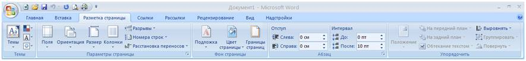
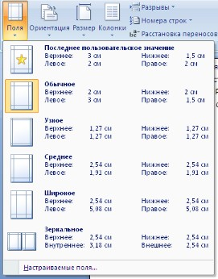
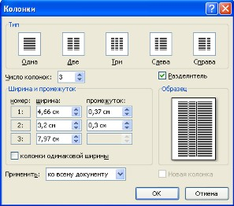
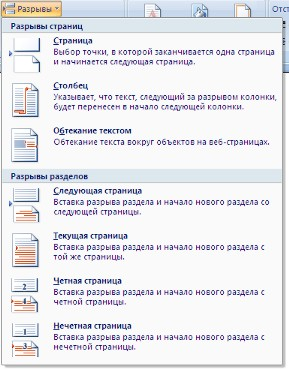
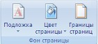
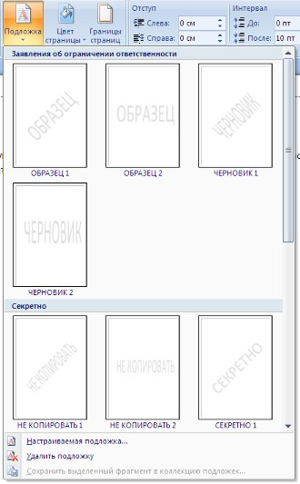
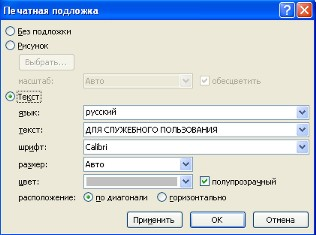
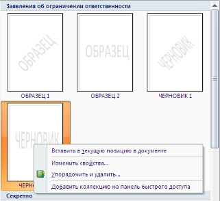
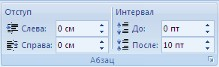
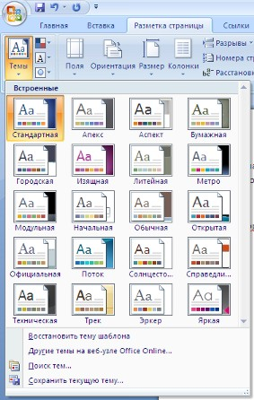

<< предыдущая лекция
|
Лекция 7. Оформление страниц
|
следующая лекция >>
|
После
создания нового документа рекомендуется сразу установить параметры страницы
(если стандартные установки не подходят для решения задачи). Для настройки
параметров страницы служит лента "Разметка страницы", состоящая из
следующих панелей: Темы;
Параметры страницы; Фон страницы; Абзац; Упорядочить.

Кнопка
"Поля" служит для
установки значений полей документа. Если из предложенных стандартных вариантов
ни один не подходит, необходимо воспользоваться пунктом меню
"Настраиваемые поля..". В появившемся окне можно произвести более
тонкие настройки полей документа.

Кнопка
"Ориентация" задает расположение текста на листе: Книжная, Альбомная.
Кнопка
"Размер" задает размер бумаги при выводе на печать. Для выбора
нестандартного размера служит опция "Другие размеры страниц..".
Следующая кнопка "Колонки"
служит для разбивки текста страницы на несколько колонок (подобно газетной
верстке). Опция "Другие колонки.." служит для гибкой настройки
колонок. Все функции настройки интуитивно понятны, к тому же, в окне
"Образец" сразу показано как будет выглядеть страница.

При работе с документами зачастую
возникает необходимость начать новую страницу, в то время как предыдущая еще не
заполнена полностью текстом. Например, в книге так начинается новая глава.
Разрывы можно, конечно же, делать с помощью необходимого количества нажатий
клавиши "Ввод", однако, к такому методу ни в коем случае нельзя
прибегать! Стоит вам только внести небольшую правку в документ (вставка или удаление
всего пары-тройки слов), как вся верстка документа "съедет". Придется
"перелопачивать" весь документ (представьте, если он состоит из
нескольких десятков глав и сотен страниц) для исправления разметки.
Чтобы начать новую страницу в
Word есть специальная опция - "Разрывы".

На этой вкладке собрано довольно
много разнообразных вариантов разрыва не только страниц, но и разделов. Так,
например, с помощью разрыва страницы можно принудительно перенести текст в
другую колонку (вариант "Столбец").
Чтобы задать обтекание текста
вокруг графических объектов или элементов веб-страниц, необходимо
воспользоваться пунктом "Обтекание текстом".
Иногда возникает необходимость использовать
различные параметры форматирования для разных страниц документа (например, один
из листов документа должен иметь альбомную ориентацию). В этом случае документ
необходимо разбить на разделы. Каждый раздел можно будет форматировать
совершенно независимо от других разделов.
При удалении разрыва раздела
предшествующий текст становится частью следующего раздела и принимает
соответствующее форматирование, а последний знак абзаца в документе определяет
форматирование последнего раздела в документе.
Word 2007
предоставляет четыре варианта разрыва разделов: Следующая страница; Текущая; Четная страница; Нечетная страница.
Чтобы видеть разрывы разделов (как, впрочем, и страниц), нужно включить опцию
отображения непечатных символов. Для этого на ленте "Главная" на
панели "Абзац" необходимо нажать правую верхнюю кнопку с изображением
значка абзаца или сочетание клавиш Ctrl+Shift+8 (Ctrl+*). Для удаления раздела
необходимо выделить его значок и нажать кнопку Delete.
Опция
"Номера строк" предназначена для нумерации строк документа в различных
вариациях. Из практики можно сказать, что к подобной нумерации прибегают
довольно редко. Но, в отдельных случаях, она может быть весьма полезной.
По умолчанию Ворд работает в
режиме автоматического размещения текста: если слово не помещается в строке,
оно переносится на следующую. Но, программа умеет расставлять и переносы слов.
Для этой цели служит опция "Расстановка
переносов". Возможны два варианта: Автоматическая
настройка; Ручная настройка. Пункт "Параметры расстановки переносов"
позволяет сделать тонкую настройку параметров расстановки переносов.

В Word 2007 появилась возможность
добавлять подложку на страницы. В качестве подложки можно использовать текст
или рисунок.

Если не подошла ни одна из
предложенных подложек, можно создать свою. Для этого предназначен пункт
"Настраиваемая подложка..".

Для создания текстовой подложки
надо установить переключатель в положение "Текст", ввести нужный
текст, настроить необходимые параметры: язык, шрифт, цвет и расположение
надписи, прозрачность.
Для создания графической подложки
надо установить переключатель в положение "Рисунок" и нажать кнопку
"Выбрать". Затем указать место размещения нужного файла изображения.
При желании можно отредактировать
представленные в галерее стандартные подложки. Для этого надо щелкнуть на
выбранном варианте правой кнопкой мыши и выбрать команду "Изменить
свойства". Удалить подложку из галереи можно с помощью пункта
"Удалить подложку".

Кнопка
"Цвет страницы" позволяет установить практически любой цвет для страницы. Однако,
следует учитывать тот факт, что далеко на каждый цвет может воспроизвести
принтер во время печати документа. Поэтому, дабы не попасть в неприятную
ситуацию, лучше использовать стандартную палитру цветов. В этом случае можно
быть уверенным, что цвет на экране монитора и на печати будут совпадать
(насколько это вообще возможно). Также здесь можно выбрать и способ заливки
фона страницы (градиентная, узором, текстурная). Или же выбрать какое-либо
изображение для фона страницы.
Кнопка
"Границы страниц" устанавливает видимыми печатные границы страницы. Более подробно
эта вкладка будет рассмотрена позже, когда будем разбирать работу с таблицами.
На панели "Абзац"
расположены две опции форматирования абзаца: "Отступ" и
"Интервал". Которые регулируют свободное поле по горизонтали и
вертикали соответственно.

4.
В Word 2007 разработчики добавили еще одну новую функцию - темы оформления, которые можно применять к текстовым документам. На вкладке
"Темы", нажав кнопку "Темы" можно попасть в галерею,
содержащую несколько вариантов оформления документа.

Темы можно удалять и
редактировать с помощью кнопок группы "Темы": Цвета темы; Шрифты темы; Эффекты темы.
Следует иметь ввиду, что при изменении параметров шрифтов будут модифицированы
используемые в документы стили. Чтобы сохранить новую тему в виде отдельного
файла, нужно нажать кнопку "Темы" и выбрать пункт "Сохранить
текущую тему". Тема добавится в галерею, в которой появится область
"Пользовательские".